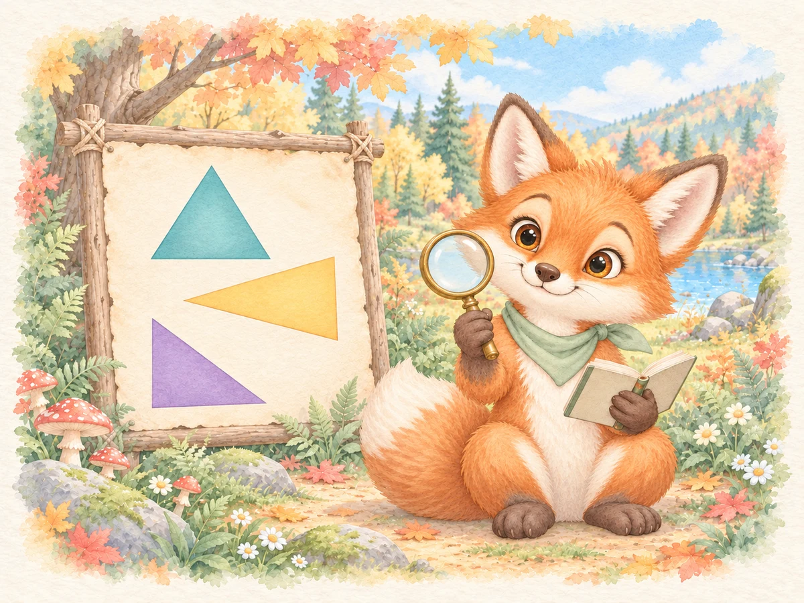

01
Notice defining features
A triangle has exactly three straight sides joined at three corners. Follow the outline and check that it closes with no gaps.

Is it a triangle? Look closely with a friendly woodland fox. Count the straight sides, find the corners, and check that the shape is closed.
One-time price: $1.99 USD. After purchase, sign in to My Games with your checkout email to download your game.
Already purchased? Sign in to My Games for your downloads.
My Games · downloadsThree straight sides. Three corners. No gaps.
A triangle has exactly three straight sides joined at three corners. Follow the outline and check that it closes with no gaps.
Decide whether a shape is a triangle. Use what you see—not just what it reminds you of—to explain your answer.
Turn a shape or change its color. Talk about why its sides and corners still make it the same kind of shape.
Choose a level and begin the investigation. Study one shape on the board. Turn it or change its color to see it another way.
Use Count Sides, Find Corners, and Look for Gaps to inspect the shape. Pause to describe the features together.
Choose Yes or No for “Is it a triangle?” If you need another look, try again. Move on when ready and review the triangle rule at the end.
First Discoveries: Compare triangles with circles, squares, and rectangles.
Look Closer: Investigate triangles alongside open shapes, curved-side shapes, and squares.
Challenge: Explore the full mix, including pentagons, and explain which features matter.
Round length: Starts at 24 shapes. Presets offer 12, 20, 24, or 30; a custom setting allows 1–100.
The goals above describe the intended activities: recognizing a triangle’s defining attributes, comparing shapes, and explaining a geometric decision. Formal standards alignment is still under review; no official standards codes are claimed here.
A little shape talk can reveal a lot of thinking.
Keep your downloaded game for offline classroom use. Check sound and controls on your device before the lesson.